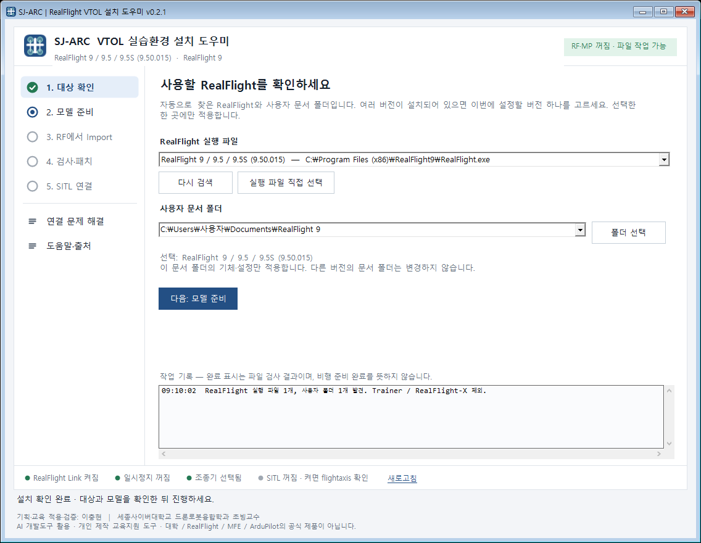
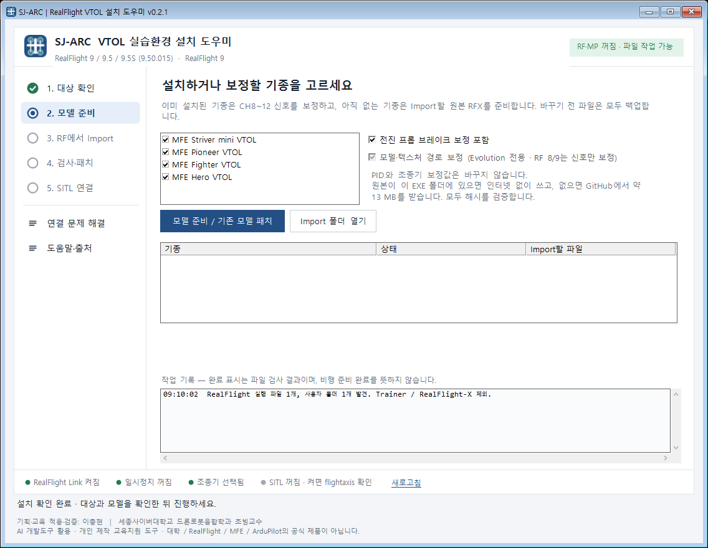
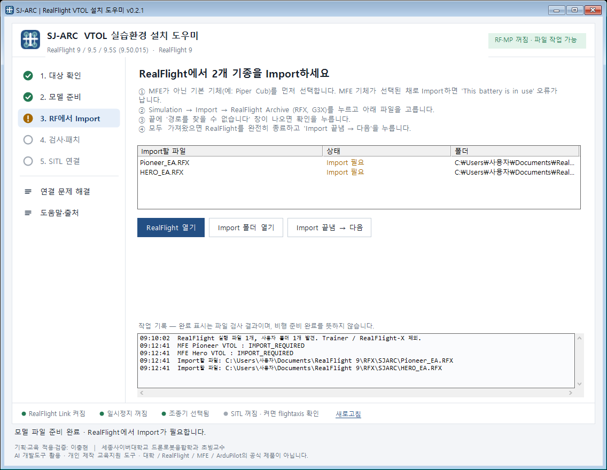
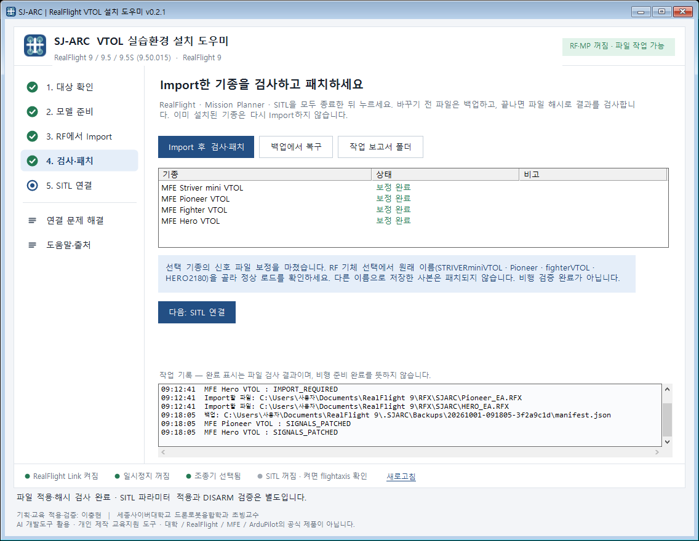
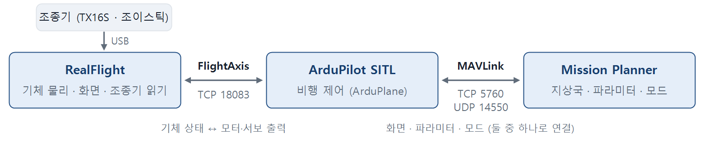
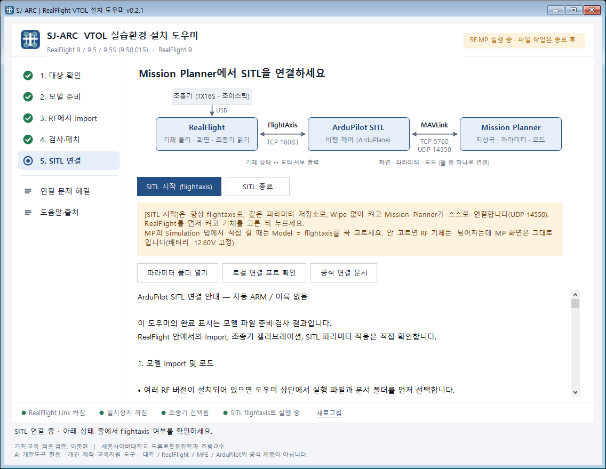
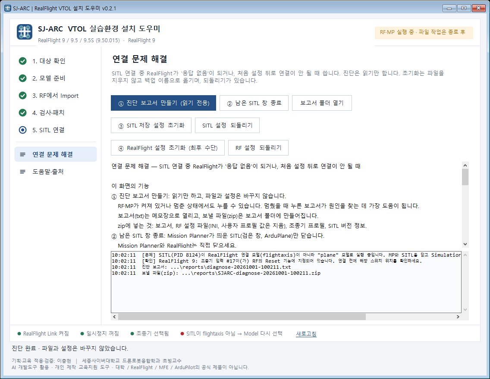

RealFlight + ArduPilot SITL (Mission Planner) · MFE VTOL 4종
이 가이드는 RealFlight에 MFE VTOL 4종(Striver mini · Pioneer · Fighter · Hero)을 넣고, Mission Planner의 ArduPilot SITL과 연결해 비행 실습을 준비하는 순서를 화면과 함께 설명합니다. 위에서부터 한 단계씩 따라 하면 됩니다.
이 가이드의 화면은 RealFlight 9 PC를 기준으로 한 예시입니다. 경로의 사용자 자리에는 실제 Windows 사용자 이름이 나오고, 목록의 기종과 상태는 PC마다 다를 수 있습니다.
기획·교육 적용·검증: 이충현 (세종사이버대학교 드론로봇융합학과 초빙교수)
AI 개발도구를 활용해 만든 개인 제작 교육지원 도구입니다. 대학 · RealFlight · MFE · ArduPilot의 공식 제품이 아니며, 보증이나 인증을 뜻하지 않습니다.
| 파일 | 용도 |
|---|---|
| SJARC-RealFlight-Setup.exe | 설치 도우미 (이 가이드의 프로그램) |
| 원본 모델 *_EA.RFX 4개 제조사 파라미터 *_V4.4.4.param 4개 | MFE가 공개한 원본. 같은 폴더에 있으면 인터넷 없이 설치됩니다(해시로 검증). |
| Pioneer_VTOL_RF_SITL.param Striver_VTOL_RF_SITL.param | RealFlight SITL 전용 파라미터 (실제 기체에는 쓰지 않음) |
| 현장_순서_RF9.txt, README_KO.md | 짧은 현장 순서표와 설명서 |
RF 9와 Evolution이 같이 설치된 PC에서는 이번에 설정할 버전 하나만 고릅니다. 두 버전에 모두 넣으려면 대상을 바꿔 같은 순서를 한 번 더 합니다. RF 9와 Evolution을 동시에 켜지 마세요(둘 다 FlightAxis 포트 18083을 씁니다).

| ① 단계 목록 | 위에서부터 따라가는 순서입니다. ● 완료 · ● 지금 할 단계 · ● 확인 필요 · ○ 아직. 아래쪽에 연결 문제 해결과 도움말·출처가 있습니다. 아무 단계나 눌러 다시 볼 수 있습니다. |
| ② 할 일 카드 | 지금 단계의 설명과 버튼입니다. 파란 버튼이 그 단계의 주 버튼입니다. |
| ③ 작업 기록 | 도우미가 한 일이 시간순으로 남습니다. 문제가 생기면 이 내용을 사진으로 보내 주세요. |
| ④ 상태 줄 | RealFlight Link · 일시정지 · 조종기 · SITL 상태를 늘 보여 줍니다(9쪽). 으로 다시 읽습니다. |
| ⑤ 상태 배지 | 초록 "RF·MP 꺼짐 · 파일 작업 가능"일 때만 2 · 4단계의 파일 작업이 됩니다. 주황이면 RF · MP · SITL을 먼저 끕니다. |

원본 파일은 도우미와 같은 폴더(USB)에 있으면 그대로 씁니다. 없으면 GitHub에서 약 13 MB를 받습니다. 어느 쪽이든 해시로 검증하고, 바꾸기 전 파일은 모두 문서\RealFlight 9\.SJARC\Backups에 백업합니다.

RealFlight 9 / 9.5에서는 Import가 필요한 기종마다 아래를 반복합니다.

| RF 9: Simulation → Settings → Physics | 값 |
|---|---|
| RealFlight Link | Yes |
| Pause Sim When in Background | No |
| Pause Sim When in Menu | No |
| Automatic Reset Delay | 2.0 |
| 조종기 설정: Software Radio Dual Rates and Expo | Off |
도우미가 RF 설정 파일에 이미 적용해 두므로 화면에서 확인만 하면 됩니다. 도우미 아래 상태 줄로도 볼 수 있습니다. 되돌리려면 백업에서 복구를 누르고, 최근 작업부터 되돌립니다.


Mission Planner의 Simulation 탭에서 직접 켜도 됩니다: → Model = flightaxis → → , Wipe 체크 금지. 처음 한 번은 로 바꿔야 Simulation 탭이 보입니다.
SITL이 RF와 따로 돌아서 RF 기체는 넘어지는데 Mission Planner 화면은 그대로입니다(배터리 12.60V 고정). 파라미터 저장소도 달라져서 비행모드가 MANUAL · FBWA만 보입니다. 파라미터가 지워진 것이 아니니, SITL을 닫고 flightaxis로(또는 SITL 시작으로) 다시 켜면 돌아옵니다.
연결된 대상이 DISARM 상태의 SITL인지 확인한 뒤 진행합니다. 처음이라면 로 기존 값을 먼저 저장해 두세요.
| 기종 | 불러올 파일 (순서대로) | 비고 |
|---|---|---|
| Pioneer | Pioneer_VTOL_RF_SITL.param | 모터 3·4 번호 교체 포함 |
| Striver mini | Striver_VTOL_RF_SITL.param | 모터 3·4 교체, 엘리베이터 반전, VTOL 롤 P 0.2 포함 |
| Fighter | ① Fighter_VTOL_V4.4.4.param ② MFE_MotorMap_ONLY.param | MANUAL에서 엘리베이터 방향 확인 (반대면 SERVO2_REVERSED = 1) |
| Hero | ① Hero_VTOL_V4.4.4.param ② MFE_MotorMap_ONLY.param | V-tail (SERVO2 = 79, SERVO4 = 80) |
| SITL 출력 | 기능 값 | RF 기체의 모터 위치 |
|---|---|---|
| SERVO9 | 33 (모터1) | 앞 오른쪽 |
| SERVO10 | 34 (모터2) | 뒤 왼쪽 |
| SERVO11 | 36 (모터4) | 뒤 오른쪽 |
| SERVO12 | 35 (모터3) | 앞 왼쪽 |
제조사 원본 파라미터는 SERVO11 = 35, SERVO12 = 36이라 RF 기체 배선과 3·4번이 반대입니다. 이대로 뜨면 한쪽으로 뒤집히므로 위 표처럼 바꿔 씁니다.
"Q_ASSIST_SPEED is not set"으로 Arm이 거부되면 파라미터 파일을 불러오지 않은 것입니다. 도우미는 Arm이나 이륙을 하지 않으며, 수직비행부터 단계적으로 직접 시험합니다.
위: 모두 정상 · 아래: 흔한 문제들이 한꺼번에 있을 때
| 항목 | ● 초록 (정상) | 빨강·주황일 때 할 일 |
|---|---|---|
| RealFlight Link | 켜짐 | RF Physics에서 RealFlight Link = Yes, 또는 도우미 4단계 다시 실행 |
| 일시정지 | 꺼짐 | 켜져 있으면 MP를 클릭할 때 RF가 멈춥니다. 두 Pause 항목을 No로 |
| 조종기 | 선택됨 | RF에서 조종기를 선택·보정 |
| SITL | flightaxis로 실행 중 | "flightaxis 아님"이면 MP·SITL을 닫고 Model = flightaxis로 다시 시작 |
회색 "확인 불가 / SITL 꺼짐"은 오류가 아니라 아직 읽을 대상이 없다는 뜻입니다. 설정을 바꿨으면 을 누릅니다.

SITL 연결 중 RealFlight가 "응답 없음"이 되거나, 처음 설정한 뒤로 연결이 안 될 때 씁니다. 위에서부터 하나씩 해 보세요.
③ · ④와 되돌리기는 RF · MP · SITL이 모두 꺼져 있어야 실행됩니다. 초기화는 파일을 지우지 않고 백업 이름으로 옮기므로 언제든 되돌릴 수 있습니다.
| 증상 | 원인 | 해결 |
|---|---|---|
| RF 기체는 넘어지는데 MP 화면은 그대로, 배터리 12.60V | MP에서 Model을 flightaxis로 고르지 않음 | MP·SITL 닫고 도우미 [SITL 시작], 또는 Simulation → Model = flightaxis |
| 껐다 켜니 비행모드가 MANUAL · FBWA만 보임 | 다른 Model로 켜져 다른 파라미터 저장소를 씀 | 파라미터 다시 쓰기 전에 flightaxis로 다시 켜기 (도우미 [SITL 시작] 권장) |
| SITL 연결 전 RF 기체가 계속 뒤집히고 리셋됨 | 연결 전에는 조종기 채널 값으로 모터가 돎 | SITL을 연결하면 멈춥니다(정상) |
| Import 중 "This battery is in use" | MFE 기체가 선택된 채 Import | 기본 기체(예: Piper Cub)를 선택한 뒤 Import |
| Import 끝에 "경로를 찾을 수 없습니다" | 원본 모델 속 제작자 PC 경로 | 확인을 누르면 됩니다(무해) |
| FLY를 누르면 RF 오류 창 | 예전 도우미(v0.1.2/0.1.3)의 경로 보정 | RF 종료 → 도우미 4단계 다시 실행(자동 복구) |
| 뜨자마자 한쪽으로 뒤집힘 | 모터 3·4 번호 반대 | SERVO11 = 36, SERVO12 = 35 확인 |
| "Q_ASSIST_SPEED is not set"으로 Arm 거부 | 파라미터 파일을 안 불러옴 | 기종 파일 Load → Write → SITL 재시작 |
| SITL 연결 중 RF "응답 없음" | 여러 원인 | "연결 문제 해결" 순서대로 |
| 도우미: "RealFlight · Mission Planner · SITL을 먼저 모두 종료하세요" | 프로그램이 켜져 있음 | 모두 종료 후 다시(응답 없음이면 작업 관리자에서 끝내기) |
| 도우미 목록에 RealFlight가 없음 | RF를 한 번도 실행하지 않았거나 다른 위치에 설치 | RF 실행·종료 후 다시 검색, 또는 실행 파일 직접 선택 |
| 파일 백업 | 문서\RealFlight 9\.SJARC\Backups — 4단계 백업에서 복구로 되돌림 |
| 작업 보고서 · 진단 | 4단계 작업 보고서 폴더 또는 연결 문제 해결의 보고서 폴더 열기 |
| SITL 초기화 백업 | 문서\Mission Planner\sitl\flightaxis_SJARC-backup-날짜 |
MFE VTOL 모델과 제조사 파라미터: ArduPilot SITL_Models PR #158 (MakeFlyEasy). 연동 문서: ardupilot.org/dev/docs/sitl-with-realflight.html. RealFlight, MFE, ArduPilot의 이름과 권리는 각 권리자에게 있습니다.